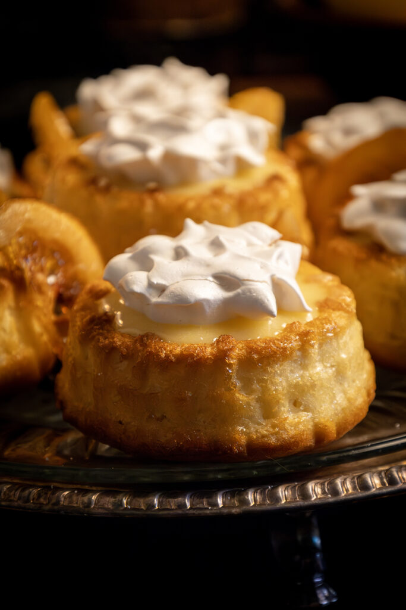

Lemon Cakes

The True Queen's Lemon Cakes
Sansa's lemon cakes are tangy, sweet, and topped with cripsy meringue.
Ingredients
Lemon Cakes
- 1 1/2 cup flour
- 1 1/2 cup cake flour
- 1 1/2 teaspoons baking powder
- 1/2 teaspoon baking soda
- 1 teaspoon salt
- 2 cups sugar
- 2/3 cup vegetable shortening
- 1 teaspoon vanilla
- 2 tablespoons lemon juic
- 3 eggs
- 1 1/2 cup buttermilk
- 3 tablespoons lemon zest
Candied Lemons and Syrup
- 2 cups water
- 2 cups sugar
- 2 lemons sliced thin
Lemon Curd
- 2 tablespoons lemon zest
- 4 eggs yolks reserve white for merigues
- 1 1/2 cups sugar
- 6 tablespoons butter
- 1/4 cup lemon juice
Merigues
- 4 egg whites
- 1/2 teaspoon cream of tartar
- 1 cup sugar
- 1 teaspoon vanilla
- 1/8 teaspoon salt
Instructions
Lemon Cakes
- Preheat the oven to 375°F. In a large bowl, whisk together the flour, cake flour, baking powder, baking soda, and salt.
- In a separate bowl, use a whisk or hand mixer to beat the sugar, vegetable oil, vegetable shortening, and lemon juice until pale in color. Add the lemon zest.
- While mixing constantly, slowly start adding in the dry ingredients ½ cup at a time. In between, add the eggs and ¼ cup of the buttermilk. Repeat until all of the ingredients are used and mixed in. Scrape the sides of the bowl as you stir to make sure everything is mixed properly. The batter will be thin but airy. It will thicken as the baking powder and baking soda react to the acids in the lemon juice.
- Lightly grease the cake cup molds. Pour the batter about ⅔ of the way full into each cavity. Do not overfill. Bake the cakes for 25-30 minutes or until golden brown, puffed up, and pulling away from the edges of the mold.
- Let the cakes cool to room temperature. It's easiest to let the cakes cool before removing them from the mold. Chill until ready to assemble. Do not assemble while the cakes are warm.
Candied Lemons and Syrup
- Preheat the oven to 225°F. In a large pot over medium-high heat, add the water, sugar, and lemon slices in a single layer. Simmer for 20-30 minutes, flipping the slices occasionally, until the slices are translucent. Reserve the syrup in a jar or bowl when done.
- Place the candied lemons on a baking sheet lined with parchment or a silicone mat, then transfer to the oven and dehydrate for 60-90 minutes. The lemon slices will look sticky and golden but not browned when they are ready. Do not overcook – reduce the temperature to 200°F if the lemons are browning too quickly.
- Once dehydrated, remove the lemons from the oven and cool to room temperature before moving to an airtight container until ready to assemble. Keep the reserved syrup chilled until ready to assemble.
Lemon Curd
- Make a double boiler by placing a heatproof bowl (metal or glass) into a larger pot with water so that the water is just beneath the bowl.
- While the bowl is cold, whisk together the yolks, sugar, lemon zest, and lemon juice. Turn the heat to medium-high and whisk constantly. Continue to whisk until the mixture thickens and is pale in color – about 10-15 minutes. It should be about the consistency of hollandaise when ready.
- Remove the curd from the heat. While it is still hot, add in the slices of butter and stir until they are melted into the curd. Let the curd cool to room temperature, then place a piece of plastic on the surface and press it flat to prevent the air from creating a skin. Chill until cold and thickened – at least three hours. Stir prior to assembly.
Meringues
- Preheat the oven to 225°F. In the bowl of a stand mixer, whisk together the egg whites with the cream of tartar. Bring up the speed of the mixer to mix the eggs until frothy. Then add in the vanilla and salt.
- Continue to whip, and when the eggs are frothy white, start adding in the sugar 1-2 tablespoons at a time – allow the sugar to melt into the egg whites between each addition.
- Whip the egg whites until stiff peaks form and the meringue is smooth and glossy. This will take about 15-20 minutes of mixing at high speed. The meringue should stand up straight and not droop over when the whisk is removed.
- Transfer the meringue to a piping bag with a star tip (for making florets) or a petal tip (to make roses). Pipe the meringue into your desired shapes on parchment or a silicone-lined baking sheet.
- Bake the meringues for 60 minutes, then turn off the heat BUT DO NOT OPEN THE DOOR. Allow the meringues to cool completely in the oven for best results.
Assembling Cakes
- Remove the cakes from the molds and place them upright. Brush each cake generously with the reserved lemon syrup. Fill the cavities with lemon curd all the way up to the sides. Place a candied lemon on the curd then a meringue on top. Serve right away to prevent the meringues from going soft. Enjoy with a feast fit for the Seven Kingdoms!
Home Page